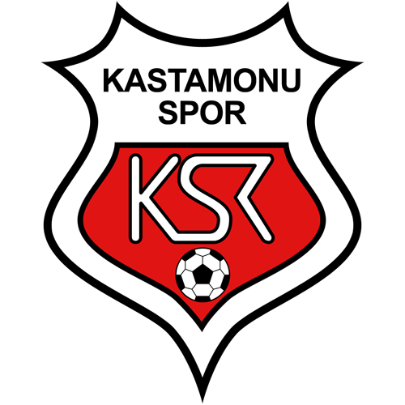

Kastamonuspor
1966 yılında kurulan Kastamonuspor, şehrin simgesi olan kırmızı-siyah renkleriyle Karadeniz futbolunun en köklü temsilcilerinden biridir. Azmin ve Kastamonu ruhunun sahadaki yansıması olan kulüp, profesyonel liglerde mücadelesini gururla sürdürmektedir.